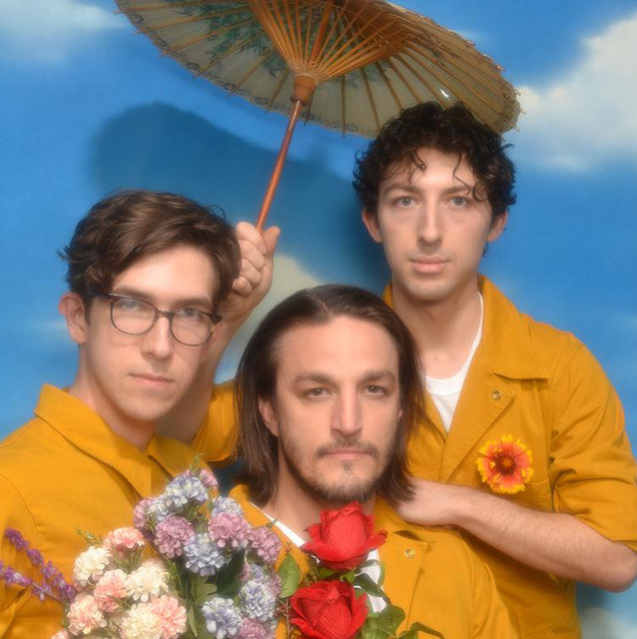

Ricky Montgomery est né en 1995 à Los Angeles, d’un père graffer et d’une mère enseignante. Des suites du divorce de ses parents, sa mère et lui ont déménagé dans le Missouri en 2005. Au cours de sa tendre enfance, Ricky a commencé à jouer dans divers groupes. En 2014, il a été remarqué sur Vine en publiant des chansons originales comiques. L’artiste avait découvert le site le lendemain du lancement de l'application à partir d'un article de presse de CNN. Il a perçu le site comme un « tremplin potentiel pour une éventuelle carrière musicale ». Après avoir rencontré le succès sur Vine, Montgomery sort son premier EP. Peu de temps après, il a abandonné l’université et est retourné à Los Angeles pour poursuivre une carrière musicale.
Le 1er avril 2016, son premier album studio sort "Montgomery Ricky". Parallèlement, Montgomery a fondé le groupe indépendant The Honeysticks avec un de ses amis d'enfance. En 2018, il a pris une année sabbatique pour faire de la musique et en a profité pour lancer des sociétés de marketing sur les réseaux sociaux pour gagner davantage d'argent. En 2020, alors qu’il envisageait d'arrêter complètement la musique, deux sigles virent le jour au milieu l’année : "Mr Loverman" et "Line Without A Hook" - sont devenus viraux. Des suites de son explosion de popularité, il a été contacté par "pratiquement tous les grands labels A&R en quelques mois". Ce n’est qu’en décembre 2020, après une grande guerre d'enchères, que Montgomery a signé avec Warner Records. Par la suite, son deuxième EP solo est sorti en avril 2022 : "It's 2016 Somewhere".
